James Tissot, Illustrator of the Bible
The brilliant painter James Tissot interests me above all for his biblical cycle. He spent a long time in Palestine, trying to convey his own impressions of what he saw. Having begun his career with salon painting, Tissot devoted all his talent to a creative study of the Holy Scriptures. In this article I want to take a brief look at his path to the theme that became the most important one for him.
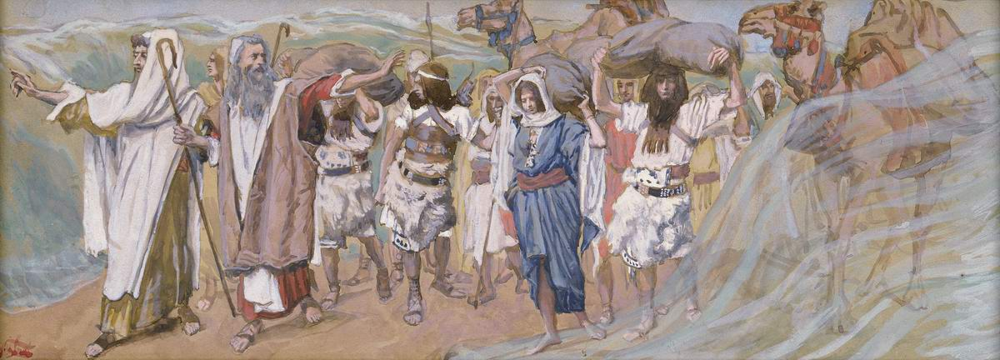
I think Tissot's creative service can be called a feat without exaggeration. He created more than 450 works (according to some sources, up to 700). Brush in hand, he tried to "read" the whole Bible. The book that had once been his mother's guide became for him not just a constant companion but a window through which he sought to look at the world and its Creator.
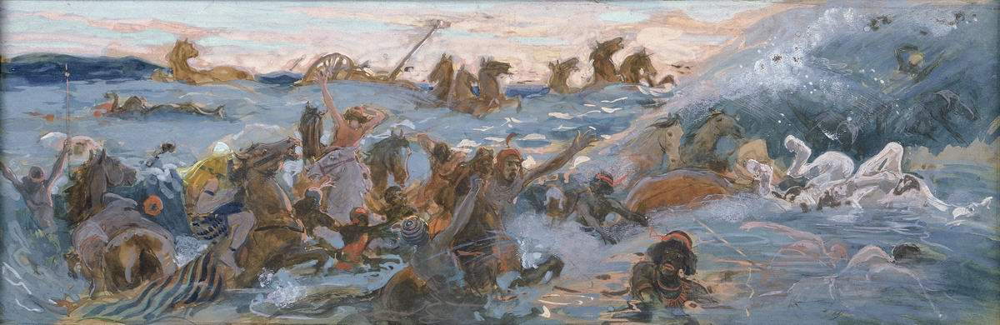
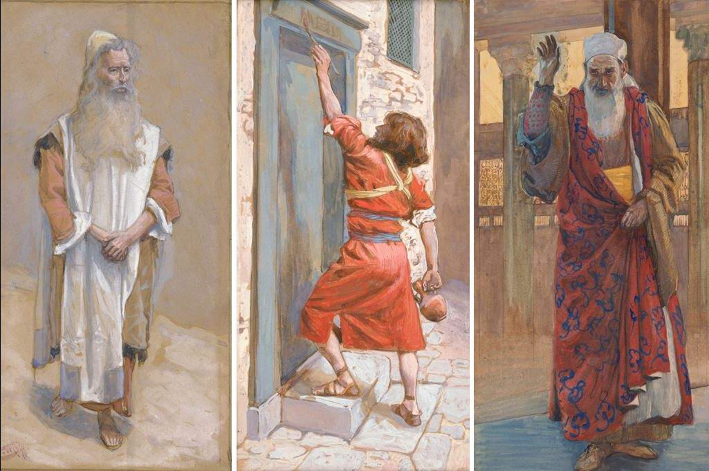
Jacques Joseph Tissot (1836–1902) was a French painter and illustrator, better known as James Tissot.
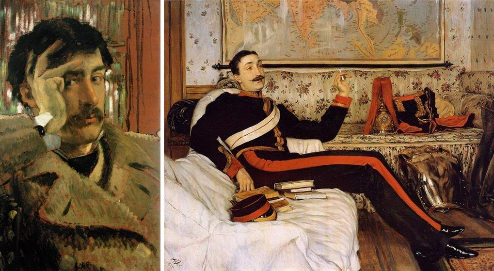
He was born in the port city of Nantes, France, and studied at the École des Beaux-Arts in Paris.
In 1871, already a successful Parisian artist, he left Paris for London. He was known for his pictures of fashionably dressed women in various scenes of everyday life.
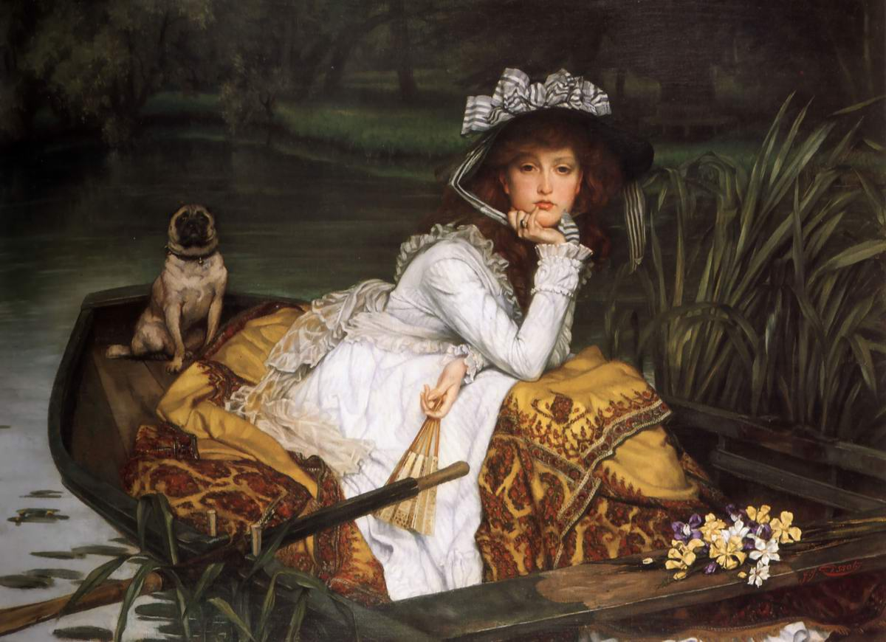
Critics consider that his paintings have a certain likeness to the work of the Impressionists in the way they render the air and in the character of their compositions. Yet Tissot's elegant canvases are more like illustrations for society fashion magazines. One can study the clothing of the time from Tissot's works, so carefully are the smallest details of the dresses and the many accessories painted.
The subjects the artist chose and his manner of painting were a great success with collectors, and by 1870 the painter was earning a good living.
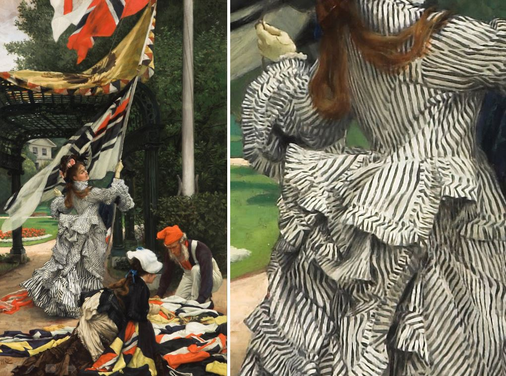
During the Franco-Prussian War Tissot, a prosperous artist, joined the National Guard (1871).
From 1871 to 1882 Tissot took refuge in London, escaping persecution by the French authorities for his sympathy with the Paris Commune.
In England he went on developing his favourite theme, scenes from society life, but adapted to English tastes. Very soon he took a high place among London's social elite. What is more, it was in England that Tissot was recognised as an unrivalled master, the painter of the social life of the Victorian elite. As the newspapers of the time wrote, "…there is a certain irony in the fact that the one considered unrivalled among English artists for elegance, brilliance and finish of detail is a Frenchman…"
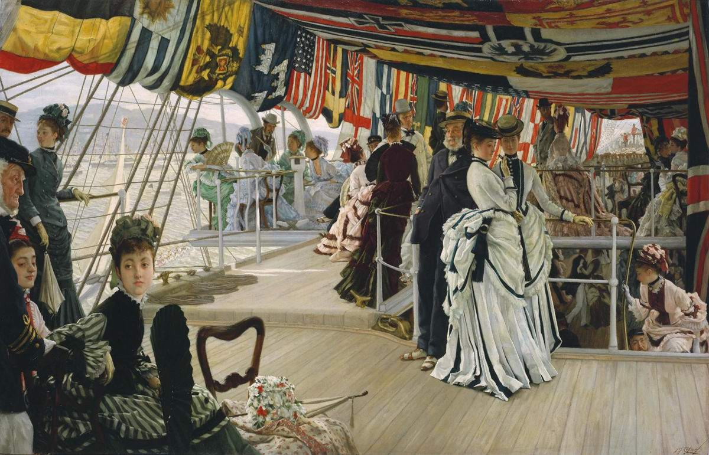
Despite his success, the new paintings Tissot exhibited in 1875, among them "The Ball on Shipboard" (1874) and "Hush", were sharply criticised by art experts, who saw in his "coloured photographs" pictures of vulgar luxury. But even this verdict of the critics could not harm his popularity or the demand for his work. By 1872 Tissot had been able to buy his own house in St John's Wood near London, a place very popular with the artists of the time.
In 1873 he became a member of the prestigious Arts Club.
Tissot's paintings appealed above all to wealthy British industrialists, and in the course of 1872 he earned 94,515 francs. Such incomes were usually characteristic of the upper classes.
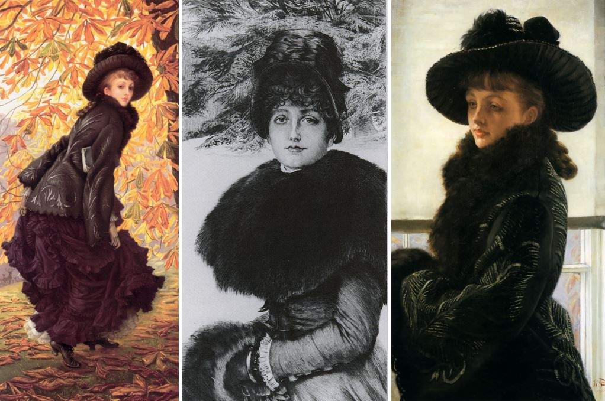
But in 1882 his world collapsed. His companion, beloved and muse, Kathleen Newton, with whom he had lived for years, died of tuberculosis. He was crushed, shaken, lost. He wavered between his Catholic upbringing and turning to occult practice in attempts to bring his beloved back, if only for the duration of spiritualist séances. Nothing could ease his pain; he was looking for salvation…
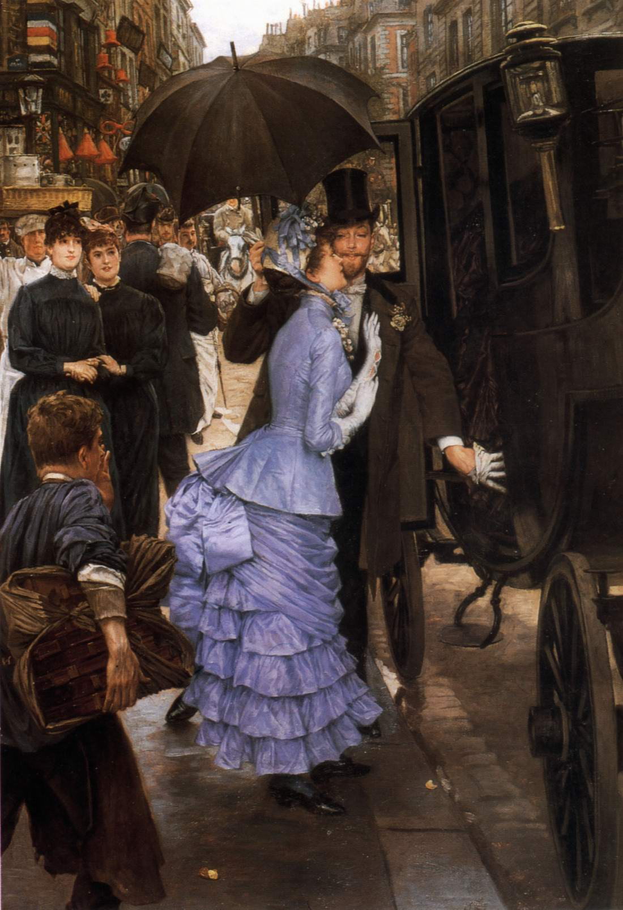
He completely lost interest in painting "society". The shock of the death of the woman he loved drove him to the source his mother had pointed him to in childhood; she was a devout Catholic and had given him a corresponding upbringing.
He turned to faith, now for the second time, and this turning was not just an opiate to dull the pain and ease the suffering.
Many of his artist friends were sceptical about his conversion: it coincided with the French Catholic revival, a reaction to the secular transformation of the Third French Republic.
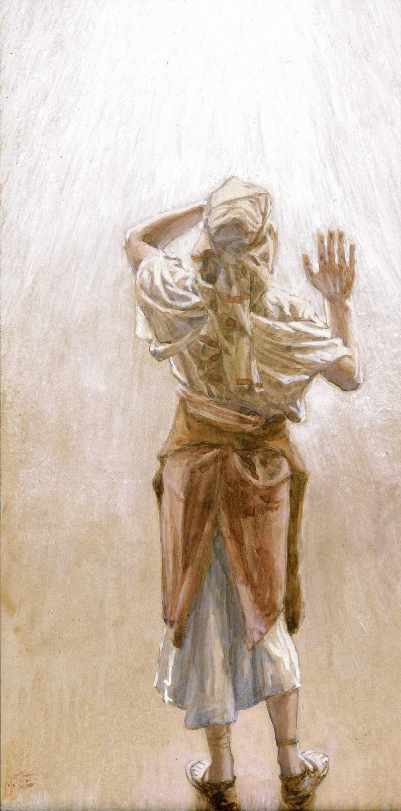
No longer through his mother's faith but through his own revelation, in 1885 Tissot found the way to his Father. This conversion, now conscious and hard-won, turned his whole life upside down. He devoted all his art to the Creator. He conceived a series of works connected with the texts of Holy Scripture.
To this end he visited Palestine several times (in 1886–87 and in 1889) and lived there for long periods. The Promised Land became the last love of his life. Practically all of Tissot's works on biblical themes were painted or conceived in the Holy Land. He did not depict Europeans dressed up in "theatrical" ancient costumes. His works show genuine people of the desert…
His cycle "The Life of Our Lord Jesus Christ" ("Vie de Notre Seigneur Jésus-Christ") comprised 365 watercolours, exhibited in 1896 at the Salon du Champ-de-Mars in Paris. They now belong to the Brooklyn Museum.
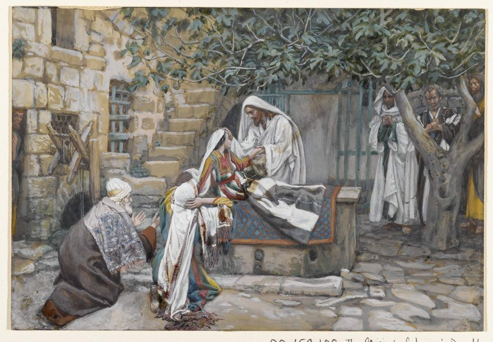
Tissot did not manage to finish his Old Testament cycle: only his works for the Pentateuch, the Historical Books and the Book of Job were completed. Reproductions of them were published in Paris and London in 1904.
In 1902 James Tissot returned from Palestine to France, only to die in his homeland.
In the next article we will look at his biblical cycle in more detail, and at whether the critics are right in not rating very highly the "spiritual level" of Tissot's Bible illustrations.
For more articles on James Tissot, see here.
Author: Ephraim Kalish
 Mark Antokolsky. Christ Before the People. Part II
Mark Antokolsky. Christ Before the People. Part II The Beginnings of Zionist Art. Part III
The Beginnings of Zionist Art. Part III